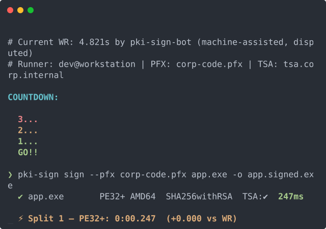
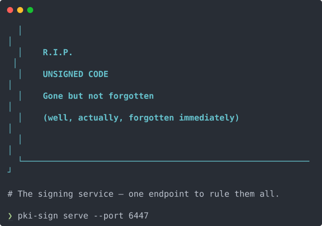
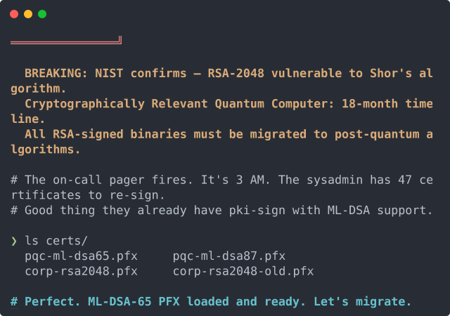
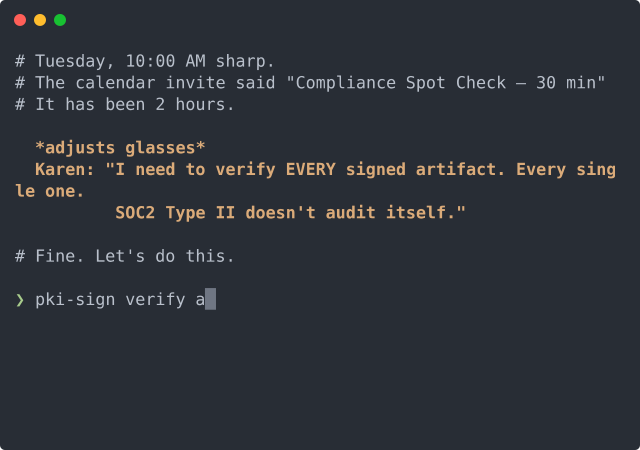
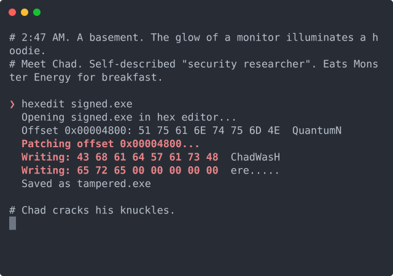
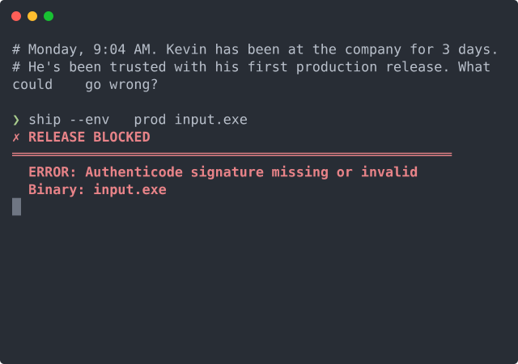

01 Hero SVG in README currently live
One animated SVG at the top of the README. Auto-plays once on page load, holds the final frame.

Strengths
- Zero extra infra — renders on github.com, crates.io, mirrors
- 56 KB asset, loads instantly
- First-time visitor sees pki-sign in action without clicking
Tradeoffs
- Tells only one story (batch signing)
- Users who want API, PQC, audit, etc. must click through
Where it lives: README.md top, embeds docs/demos/speed-run.svg.
02 Multi-demo grid preview only
Hero SVG + a 2×3 grid of smaller previews beneath it. Every use case visible on the README without clicking.






Strengths
- Every story told on one page
- Looks like a product page, not a tool README
- Each thumbnail is a static frame (~3–5 KB) — cheap
Tradeoffs
- Dominates the page — pushes install instructions down
- Maintenance: rerender all 6 when copy changes
- Reads as marketing vs. technical
If selected: append the grid markdown to README.md after the hero block. Thumbnails in docs/showcase-thumbs/ already rendered.
03 Dedicated demos page currently live
Standalone demo.html with the full asciinema-player JS — scrubbable, pausable, with copy-text.
Strengths
- Real scrubbable player — pause, rewind, copy selected text
- All 6 casts with explanatory captions and CTAs
- Separation of concerns: README stays technical, demo page stays narrative
Tradeoffs
- Requires a click from README → might not convert
- Two surfaces to maintain
Where it lives: docs/demo.html — served by GitHub Pages.
04 asciinema.org hosted uploaded (anon, 7-day TTL)
Upload casts to asciinema.org. README embeds their SVG badges; clicking opens the full scrubbable player on their site.
All 6 casts uploaded anonymously (expire in 7 days unless the CLI is authenticated to an account):
README embed would look like:
[](https://asciinema.org/a/9ODj4KkzMVjLXMvM)
Strengths
- Asciinema's CDN serves SVG badges fast, globally
- Click-through → real scrubbable player hosted by them
- No asset bloat in the repo
Tradeoffs
- External dependency. Asciinema.org outage = dead demos
- Anonymous uploads expire in 7 days — need authenticated account for permanence
- Less control over badge styling
If selected: you auth the asciinema CLI on this box (asciinema auth), re-upload the casts to your account, swap README embeds to the permanent URLs.
05 pki-sign demo subcommand built & shipping
Real subcommand in the binary. Runs a full sign + verify round-trip against a bundled throwaway cert in <20 ms. Prospective adopters can flex the tool on their own machine seconds after install.
$ pki-sign demo
pki-sign demo — end-to-end sign + verify in-process (bundled throwaway RSA-2048 cert — not a real signing key) ✔ credentials loaded (10ms) ✔ generated minimal PE32 (512 bytes) (40µs) ✔ signed — original SHA-256 06bb17dc2839…, signed SHA-256 05ba20ecbd7a… (3ms) ✔ verified — digest SHA-256 (67µs) signer: Test RSA-2048 Total round-trip: 13ms Next steps: 1. Use your own code-signing PFX: export PKI_SIGN_PFX_PASSWORD='your-password' pki-sign sign --pfx your-cert.pfx your-app.exe 2. Verify: pki-sign verify your-app-signed.exe
Strengths
- Hands-on — users execute pki-sign themselves, no setup
- 13 ms round-trip is a real data-point the tool backs up with numbers
- Doubles as an integration smoke-test — if
demofails in CI, something fundamental is broken - Gated behind
demofeature (default-on); hardened builds can exclude it via--no-default-features
Tradeoffs
- +2.4 KB in the binary (embedded test PFX)
- A
demosubcommand in a security tool can read as unserious — mitigated by the "not a real signing key" disclaimer - ~110 LOC of code + one feature flag to maintain
Where it lives: crates/pki-sign/src/demo.rs (feature-gated), wired through Commands::Demo in main.rs.
Compare at a glance
| Effort | Hosting risk | Proof strength | |
|---|---|---|---|
| 01 · Hero SVG | Low | None | Medium |
| 02 · Grid | Low | None | Medium |
| 03 · Demo page | Done | None (self-hosted) | Medium-High |
| 04 · asciinema.org | Low (auth needed) | External | Medium |
05 · pki-sign demo | Medium (done) | None | High (executable proof) |
Options are not mutually exclusive — a strong combo is 01 + 03 + 05: hero SVG on README, full demo page for browsers, pki-sign demo for the CLI.